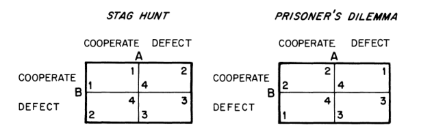
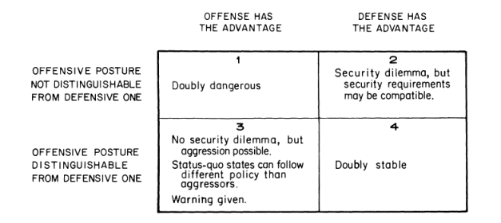

收录于合集 #《国际关系前沿》2021年第12期 22个

作品简介
作者： Robert Jervis，哥伦比亚大学政治学系阿德莱·史蒂文森讲座教授、美国科学进步协会会员、美国艺术与科学院院士，曾在加州大学洛杉矶分校（1974-1980）和哈佛大学（1968-1974）任教授。2000-2001年任美国政治学会主席。他的研究领域涉及政治心理学、国际关系理论、决策分析、核战略和美国外交政策等，是国际政治心理学的集大成者。
编译： 李燕（辽宁大学国际经济政治学院国际关系专业）
来源： Cooperation Under the Security Dilemma, World Politics , Vol. 30, No. 2 (Jan., 1978), pp. 167-214
DOI: https://doi.org/10.2307/2009958
归档： 《国际关系前沿》2021年第12期，总第39期。
文章导读
01
无政府状态与安全困境
国际主权的缺失不仅导致战争发生，也使得满足现状的国家很难达成他们认为符合共同利益的目标。 由于没有任何机构可以制定和执行国际法，国家间合作会带来互惠，不合作就可能带来灾难。同时，无政府状态的存在也使得 想要维持现状的国家可能面临更糟的处境。 正如卢梭在“猎鹿博弈”（Stag Hunt）中的描述：如果两个人合作猎鹿，他们都会吃饱。但如果其中一人去抓兔子，不仅此人的收益小于猎鹿，并且另一个人将一无所获。这便产生了四种情景：（1）合作猎鹿（如国际合作与裁军）；（2）在另一人猎鹿时，自己去抓兔子（在其他国家裁军时，本国维持较高的武装水平）；（3）两人都分别去抓兔子（军备竞赛和战争）；（4）在另一人选择去抓兔子时，自己选择去猎鹿（在其他国家高度戒备时，本国选择裁军）。猎鹿博弈表现出，尽管行为体可能在寻求一个共同的目标，但因为各自的偏好不同，最终可能无法获得一个最优解。
除此之外，国际合作还存在其他困难。首先，除了猎鹿博弈中提到的叛变动机外，国家还存在着一种强烈的担忧——即便其他国家现今选择维持现状，但不能保证这些国家在换届后依然会维持同一路线。
第二个问题是安全困境。为了维护自身财产，国家经常试图控制自己领土以外的资源或土地，不能自给自足的国家也必须设法确保在战时维持供应的正常流通。所以，对安全的追求可能会促使国家先发制人地干预他国内政，以提供一个意识形态缓冲地带。更常见的是，国家为避免直接攻击，会试图在对边境地区加大控制力度或建立缓冲区。但是这种措施可能会给其他周边国家带来威胁信号。
02
什么使得合作更有可能？
囚徒困境与猎鹿博弈的不同之处在于，不存在一个满足所有参与者最佳利益的解；从联盟中叛变的动机可能是进攻性的，也可能是防御性的；如果博弈只进行一次，那么唯一理性的选择就是背叛。如果博弈重复进行，那么后一特征便不复存在。我们可以用类似猎鹿的方法来分析博弈。剥夺其他行为体的叛变权利，对每个行为体都有利；但其他行为体都受到此类限制时，每个行为体便都会愿意牺牲自己叛变权利。但如果其他行为体不受此约束，那么行为体只有保留叛变的权利才能维护自身利益。

猎鹿博弈与囚徒困境
是什么让玩家更有可能合作达成双赢（Cooperate-Cooperate，CC）？ （1）增加相互合作的收益和/或减少行为体选择合作而另一方选择不合作时需要承担的成本（Cooperate- Defect，CD）；（2）减少利用对方的收益（Defect-Cooperate，DC）和/或增加相互不合作的成本来降低背叛动机（Defect- Defect，DD）；（3）提升双方对合作的期望值。
（一）被利用的成本（CD）
**
**
对被利用的恐惧（CD）极大地促成了安全困境的产生；国家越容易被摧毁，就越有理由去加入一个更大、更安全的联盟，或者基于对他国的怀疑而选择增加军备甚至直接发起进攻。如果被利用的成本较低，国家就可能对威胁放松警惕。
在博弈中，如果CD成本相对较低，意味着两个玩家将不必同时作出选择，一个玩家可以在另一个玩家行动后再进行选择。A玩家不必害怕对方叛变，而是可以等着看对方会怎么做。那些能够承受在交易中被欺骗的国家，或者那些不用担忧被突然袭击摧毁的国家，可以更容易地信任他国，而不必在第一个模棱两可的威胁信号出现时就采取行动。
当CD成本可以承受时，不仅安全更容易实现，而且国家可以维持相对较低的军备水平和采取相对被动的外交政策，不太可能威胁到其他国家。因此，在其他条件相同的情况下，小国比大国更多地受到无政府状态的影响。
如果一国因比其他国家更强而获得免疫，但问题依旧存在，因为该国的安全基于其可以利用他国之上。如果一国为合作破裂付出的成本很低，就会使其他国家因为其良好的行为而没有多少制衡筹码。其他更脆弱的国家将会变得不安，这会导致它们寻求更多武器，降低合作的可能性。最佳情况是，如果其他国家利用它，该国也不会遭受太大损失，但是如果与其他国家合作破裂，该国就要付出高昂的成本。这也意味着，国家的免疫状态可以为自身提供保护，但不能用来威胁他国。
被利用的最终代价就是失去主权。但这种成本会因情况而异。成本越低，安全困境的影响就越小；成本越高，安全困境的影响就越大。
（二）主观安全需求
**
**
决策者依据其感知到的脆弱性而行动，而其感知可能与现实不符。因此， 考察决策者的主观安全需求涉及两方面：一方面，即使决策者对客观情况看法一致，但他们对于安全的需求程度 （或者说，他们愿意为安全付出的代价） 可能存在分歧。 国家越是重视国家安全，越可能对小威胁敏感。 另一方面， 是对威胁的感知 （即预估对手是否会合作）。一个倾向于将其他国家视为对手的国家会比一个能周围环境中感受善意的国家反应更加强烈、迅速。但当一个国家认为另一国家不仅不太可能成为对手，而且与它有足够共同利益成为盟友的话，该国会乐见另一国家实力的增强。
（三）合作的收益（CC）与破裂的成本（DD）
一国对他国武装力量增强采取迅速且激烈的反应，不仅需要承担增强本国武装的成本，更重要的是错过了合作的潜在收益（CC），也同时增加了不必要的军备竞赛和战争风险（DD）。 这种成本越高，国家合作的动机就会愈发强烈。即便所有国家的第一选择都是维持现状，但如果和平交往不能带来丰厚收益且战争要冒的风险和代价更低，战争也会变得更加频繁。
一些基本的要点包括： 第一， 大多数政治家都明白参战会引发一系列不可预测和无法控制的事件。 第二， 政治家必须衡量战争的国内成本。 第三， 对于经济体量大且结构多元的国家来说，经济交流的收益太少不足以防止战争。 第四， 合作的收益会持续增加。在合作中，双方不仅仅能够获得更多的传统价值（如财富），并且，如果双方开始重视对方的优势，合作将产生双重收益——除了直接收益，还有看到对方成功的满足感。
虽然高昂的战争成本和合作收益将缓解安全困境的影响，但这也会产生另一个问题。如果成本足够高，那么战争就是双方最后的选择，双方将转向“懦夫博弈”。与猎鹿博弈不同的是，懦夫博弈中的每个角色都试图利用对方；与囚徒困境不同的是，懦夫博弈中的每个角色都有避免相互不合作的共同利益。在“懦夫博弈”中，如果另一方叛变，己方也必须进行合作，因为尽管被利用（CD）很不好，但要好过完全崩溃（DD）。正如大家所熟悉的威慑逻辑一样，行为体必须说服对方，让对手相信自己不会改变（一定会背叛），而对方为了避免灾难的唯一方法就是退让（采取合作）。同样的道理也适用于双方都获益的合作，如果对方的要求得不到满足，就会以破坏关系为威胁。但这种情况可能不稳定，因为经常使用威胁与维持合作关系相悖。但这点提醒了我们，合作的共同利益和背叛的共同代价可以为利用提供基础。由于政治家们意识到，积极相互依赖的增长也可以为他国提供对他们施加影响的新杠杆，超出强调合作优势理论的预期，政治家们可能会抵制这种情况的发展。
（四）从利用中获益（DC）
背叛不仅能够避免被利用（CD），而且还能通过利用另一个国家获得收益（DC）。利用他国获得的收益越少，国家越倾向于合作。 即便是对现状相对满意的国家也可能受到扩张的诱惑。如果国家有实现目标的其他途径，那么扩张的诱惑力就会降低，而且对利用他国的好处重视度下降。利用他国的收益可能很低，或是因为通过DC获得的直接优势不能转化为政治优势；或是因为该政治优势本身价值不高。
即使DC带来的直接优势很大，其他方面的考虑也会减少净收益。胜利或失败都可能在一国国内引发意想不到的变化。国际社会有时也会对利用行为表示不满，从而降低参与利用国家的声誉。其他国家也可能会因此而看到该国对他们的威胁，使其加速武装。
（五）对方合作的可能性
到目前为止讨论的变量影响着四种可能结果的收益。为了决定行动取向，国家必须进一步估算合作或者背叛的预期价值。这样的估算就包含了评估对方合作的可能性。为了鼓励对手合作，国家可以通过减少利用获得的收益（DC）来降低其他人的背叛动机，同时还可能提高僵局的成本（DD）。但是如果国家不能使得DD变成对方的最坏结果，那么胁迫短期内就会失效，因为对方可以拒绝合作作为回应，而且从长期来看是危险的，因为对方可能会相信该国具有侵略性。所以 国家不得不致力于使合作变得更有吸引力 。其中一种方法是减少在对方采取合作但本国采取背叛（CD）的情况下对方将要承担的成本。通过牺牲一些本国伤害他国的能力，可以增加与他国互利合作的机会。
国家也可以尝试增加相互合作（CC）来增加对方的收益。即使是完全由对方获利得到的收益，也是通过增加对方合作的可能性对本国有利。这种论证可以通过博弈论所熟悉的无限回归（infinite regressions）继续下去。当对方准备在认为我方愿意合作时采取合作，那么国家就可以通过表明合作计划来增加CC的机会。因此国家应该轻描淡写利用他国所得收益（DC）以及被他国利用的成本（CD），转而强调夸大在相互合作（CC）时的收益以及如果陷入僵局（DD）所要付出的代价。国家也试图说服他国相信，它认为对方会合作。如果对方能够相信，就会看到国家有强烈的合作动机，因此而采取合作。出于对方可能会担心不合作就会被利用而被迫背叛（欺骗），国家应该努力向对方保证这种情况不会发生。
但是这样做也存在隐患。如果他国认为国家除了合作别无选择，那么除非国家提供额外的好处，否则对方就会威胁要背叛国家。相互合作的优势为竞争谈判提供了杠杆。
当双方都有愿意合作时，核查设备可以改善安全困境，核查可以在很大程度上满足国家免受未来威胁的需要，从而使当前的合作更加可行。不了解安全困境的政治家会认为，钱是增加军备的唯一成本。但是他们不明白，试图增加一个人的安全实际上可以减少开支。另一方面，对安全困境的高度敏感使得国家更有可能将侵略者视为现状的不安全保护者。
03
进攻、防御与安全困境
另一种考察安全困境适用条件的方法涉及两个关键变量： 防御性武器和政策能否与进攻性武器和政策区分开来；防御与进攻孰优孰劣。 这两个变量在很大程度上揭示了现状大国是否会采取兼容安全政策的问题。
（一）攻防平衡
**
**
当进攻方有优势时，意味着摧毁对方的军队、占领对方的领土比守卫容易得多。当防守方有优势时，比起进攻、摧毁与夺取，镇守更容易。
攻防平衡的两个问题可以分开来谈 。 其一 ，国家是否必须在防御力量上花同样的钱以抵消对手用于攻击力量上的支出？如果国家有可以花在加强安全上的钱，应该将之投入进攻性力量还是防御性力量？ 其二 ，在给定兵力清单的情况下，进攻好还是防御好？是否存在先发制人或承受对方打击的动机？ 这两个问题往往彼此联系 ：如果花在进攻上的钱可以抵消花在防御上的钱，并且如果双方有相同的防御预算,那么双方都有可能发展进攻性力量，进攻比等待对手袭击更有吸引力。
这些以不同的方式影响着安全困境。 第一个问题对军备竞赛的影响最大。如果防御具有优势且维持现状的国家有合理的主观安全要求，他们就可能避免军备竞赛。 虽然一方的军备的增加仍然会减少另一方的安全，但前者的增加将大于后者的减少。因此，如果一方增加其武装力量，另一方可以通过增加较小数量的武装力量使其安全恢复到以前的水平。如果第一方对这种变化做出反应，其增加值也将小于产生它的刺激。这样就会达到一个稳定的平衡。如果防御能力比进攻强大得多，双方都愿意拥有比对方小得多的军队，并且可以对对方的大量防御政策漠不关心。
第二个问题——进攻好还是防守好——影响短期稳定。当进攻方占优势时，国家对国际紧张局势的反应将增加战争的可能性。 通过分析两个国家具有先发攻击能力时所存在的危险，可以清楚地说明在这种情况下先发制人的动机和“对突然袭击的相互恐惧”。国家不可能在不威胁、甚至不攻击对方的情况下增强自身的安全。
战争中进攻方更占优势的信念进一步加深了安全困境。 当国家有先发制人的动机时，一次成功的攻击通常会削弱对方，从而取得相对迅速的决定性胜利。正是在这一时期，当征服成为可能并具有吸引力时，国家会对内巩固权力，并向外扩张。有以下几种情况会减少现状国家之间合作的机会： 第一 ，一旦能够在战争中取得胜利，高额的收益将对一国产生巨大诱惑。 第二 ，由于人们预期战争将是频繁而短暂的，因此国家有动机发展高水平的武器并对对方增加军备的行为做出快速而强烈的反应。 第三 ，当战争发生迅速时，各国将不得不提前招募盟友。在敌对行动开始阶段，没有讨价还价和重新结盟的机会。 第四 ，如果战争频繁发生，政治家的感知阈值会相应地调整，他们会很快察觉到模糊的证据，判断其他国家的侵略意图。因此，维持现状的大国之间的情况极为复杂，极有可能错误的判断对方的敌意。
当防守方拥有优势时，上述情况完全相反。害怕攻击的国家并不会先发制人——因为这将是对其军事资源的浪费——而是准备接受攻击。这样做并不会降低其他国家的安全感，而且几个国家可以同时这么做；因此，局势将是稳定的，维持现状的大国将能够合作。当防御国占主导地位时，战争很可能陷入僵局，只有付出巨大代价才能取得胜利。相对弱小的国家可以抵御更强大的国家，或者可以通过提高征服成本到不可接受的水平来阻止攻击。
（二）攻防区分
**
**
另一个影响安全困境的主要变量是，保护国家的武器和政策是否也提供了攻击能力。如果进攻有明显优势，征服和侵略就可能发生。如果进攻方的优势足够大，维持现状的国家可能会发现用防御性力量保护自己过于昂贵，并决定购入进攻性武器。此外，即使对方现在的军事姿态显示出是和平的，未来也可能会发展出侵略意图，各国仍需担心。
假设防御和进攻一样有效，对它们的区分将带来三个有益的后果：第一 ，现状大国可以相互识别，从而为合作奠定基础。由于错误地认为另一方是扩张主义者而产生的冲突将会减少。 第二 ，当其他国家计划侵略时，现状国家会得到预先警告。在一个国家能够进攻之前，它必须发展和部署进攻性武器。如果这些武器的采购不能伪装，现状国家将有时间采取反制措施。 第三 ，如果所有国家都支持现状，那么一项明确的军控协议就是禁止用于攻击的武器。
就攻防的区分存在以下几个问题。 即使区分是可能的，维持现状的大国在以下三种情况中的任何一种都想要进攻性武器。 （1）如果进攻比防守更具优势，那么通过防守力量进行保护的成本将过高。（2）维持现状可能需要进攻性武器来收复战争开始阶段失去的领土。（3）国家可能会认为，只有发起进攻才能使对方在失去领土的情况下维持和平。另外，当该国承诺在对方对第三方发动战争时加入战争时，也会准备发起进攻。如上所述，对外做出承诺的现状国家往往也被迫表现出侵略性。
更复杂的是， 侵略者和维持现状的国家都需要防御力量作为进攻力量的前奏 ，在对外进攻时保护既得边界，或者在战争恶化的情况下作为保障。因此，如果邻国建立了强大的防御力量，国家不一定会感到安心。
更困难的是， 一种武器是进攻性的还是防御性的往往还取决于特定的情况 ，例如，地理位置和使用武器的方式。
防御的本质是把对方挡在你的领土之外。纯防御性武器是指不能穿透敌人的土地就能做到这一点的武器。最突出的例子是防御工事——可以庇护攻击部队，但不能占领敌人的领土。如果一个国家只有一排坚固的堡垒、固定的枪支，以及一支小规模的军队来驻守这些堡垒，那么这个国家就不会有太大的威胁。
以上是在“完全静止”情况下的一个只具有防御性的系统，但在包含“有限移动”的情况下系统属性就很模糊。例如，短程战斗机和防空导弹可用于掩护攻击，但与堡垒不同的是，它们可以随部队前进。然而，它们无法深入到敌人的领土，这使得它们在防御方面比进攻方面更有用。
任何出于各种原因而只能在自己的领土上战斗的部队实际上都缺乏机动性，因此是防御性的。最典型的例子是被动抵抗。不合作可以挫败侵略者，但要让大批人越过边境，在另一个国家的领土上静坐示威，是非常困难的。
如果游击军不能在外国打仗，其他种类的军队就更不可能愿意进攻。如果一支军队目标是征服敌人，被灌输了防御性战争的思想，那么它的战斗效率就会降低。国内民兵可能既缺乏侵略的能力，也缺乏侵略的意愿。所使用的武器、短期的服役、动员所需的时间以及击退对本土的攻击的精神，都使它们更适于防御而不是攻击外国领土。
不那么理想主义的动机也会产生同样的结果。大多数的扩张运动都是由一个占统治地位的国家发动的，而相对平等的国家之间通常会结成联盟来维护现状，这并非偶然。征服带来的大多数收获都是不确定的，而且会引起未来胜利者之间的争论，从而使联盟无法长久地维系下去。
当然，并不总是能够区分最能有效控制领土的部队和最适合占领领土的部队。在普法战争和第一次世界大战的大部分时间里，欧洲的战略和武器都不可能作出这样的区分。海军和战术空军都不能轻易地用这些术语来分类。但本文在此的要点是， 当攻防区分是可能的，安全困境的中心特征不再成立，无政府状态最麻烦的后果之一得以消除。
04
四种世界
第三部分已经讨论过的两个变量可以合并成四个可能的世界。

第一世界对于维持现状的国家来说是最糟糕的。没有任何方法可以在不威胁他人的情况下获得安全，而通过防御获得安全又是极其困难的。 因为进攻比防守更有优势，因此，维持现状的国家将表现得像侵略者。局势将会不稳定，可能会出现军备竞赛。先发制人的动机将把危机变成战争。决定性的胜利和征服将是普遍的。国家将迅速增长和收缩，任何国家都很难在不试图扩大的情况下保持其规模和影响力。维持现状的大国之间的合作将极其难以实现。
在第二世界，安全困境之所以存在，是因为无法区分进攻姿态和防御姿态； 但它不像第一世界那样强烈，因为防御有优势，所以一方力量的增加，是增加了其自身安全，而不是减少了另一方的安全。所以，如果双方都有合理的主观安全需求且权力大致相等，且前面讨论的变量都有利，则很有可能维持现状国家可以采取兼容的安全政策。尽管一个国家无法从其对手获得的武器种类来判断对方的意图，但对方的武器支出水平将提供重要线索。一个寻求高水平武器的国家可能不是一个侵略者，而仅仅是一个不安全的国家。此外，防御有优势意味着，一个维持现状国可以在其武器水平低于预期的对手的情况下保持高度的安全。这种状态表明其缺乏改变现状的能力或欲望。强大的防御能力也让各国在担心其他国家威胁自己的时候能够做到这一点。因此，尽管维持现状的权力将在某种程度上对其他国家构成威胁，但这种威胁是有限的。
在第三世界可能没有安全困境，但有安全问题。由于国家可以获得不会对其他国家构成威胁的防御系统，因此这种两难困境无需发挥作用。但是因为进攻有优势，进攻可能发生而且易于发生。 如果进攻有足够的优势，即使是维持现状国也可能采取主动进攻，而不是冒被攻击和打败的风险。如果进攻的优势较少，那么稳定和合作是可能的，因为维持现状将获得防御力量。他们不必对其他同样武装的国家作出反应，可以等待着其他国家开始部署进攻性武器时的信号再行动。但是国家在此情况下都必须仔细观察他国，并且存在着错误怀疑的可能。防御的代价和进攻的诱惑可能导致不必要的不信任、敌意和战争。
第四世界加倍安全。进攻和防御系统之间的区分使得有摆脱安全困境的方法；防御的好处解决了前面各段所讨论的问题。 维持现状的势力没有理由被诱惑去发动进攻，而侵略者通过他们采取的姿态来告知他们的意图。如果防御的优势足够大，就不存在安全问题。失去改变现状的权力的最终形式，将为非军事手段的运用提供更大的空间，可能会冻结价值的分配。此外，当危机发生时，没有行为体会有先发制人的动机，没有会减少谈判的时间的竞争性动员比赛。
译者评述
本文是罗伯特·杰维斯于1978年所发表的一篇经典之作。对于国际社会存在的安全困境问题，杰维斯认为，安全两难的严重程度取决于两个变量：攻防平衡以及攻防区分。攻防平衡指的是“进攻与防守孰难孰易”，这种比较主要有四种形式，包括：攻防成本比较、攻防效用比较、攻防效率比较、战争结果比较。攻防区分指的是如何区分一国的进攻能力和防御能力，从而推导出是进攻容易还是防御更容易。
杰维斯在本篇文章的研究基础上发展出了攻防理论。对于攻防的区分研究也促进了现实主义之间的主要辩论，导致了进攻性现实主义和防御性现实主义两大分支学派的出现，极大地促进了国际关系理论的发展。但是正如杰维斯本人也承认的那样，攻防并不总是能够加以区分，受到很多因素诸如地理位置、使用武器方式等的影响。这将使得攻防理论在现实运用中存在着失误偏差，偏差下将对手认定为防御性力量，行为体需要承受一定的风险成本；将对手认定为进攻性力量，行为体需要加大国防支出且可能加深了安全困境。这种失误偏差在行为体互动中能够得到改善，但行为体之间信任关系的建立并非一日之功，需要长期交往。
国际社会的无政府状态和安全困境的存在是现实主义的基本假定，从本质上来说，缓解安全困境的核心在于解决行为体意图的不确定性。杰维斯这篇文章对于现今中国崛起的一点启示在于：面对崛起过程中可能的大国竞争，需要重视化解由于意图不确定、恐惧以及认知偏差而产生的安全困境，与可能的对手国形成良性大国战略竞争。为了减少判断的失误偏差，要始终与对手国保持交流的通道，增进互信。
词汇整理
猎鹿博弈 stag hunt
囚徒困境 prisoner’s dilemma
懦夫博弈 chicken game
攻防平衡 offence-defence balance
攻防区分 offence-defence differentiation
责编 | 房宇馨 朱晓洁
排版 | 彭雯昕 邱意雯
文章观点不代表本平台观点，本平台评译分享的文章均出于专业学习之用, 不以任何盈利为目的，内容主要呈现对原文的介绍，原文内容请通过各高校购买的数据库自行下载。

国政学人
支持学术公益与知识传播
微信扫一扫赞赏作者 __赞赏
已喜欢，对作者说句悄悄话
取消 __
发送给作者
发送
最多40字，当前共字
上一页 1/3 下一页
长按二维码向我转账
支持学术公益与知识传播
受苹果公司新规定影响，微信 iOS 版的赞赏功能被关闭，可通过二维码转账支持公众号。